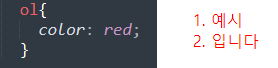

상속 그리고 공용 키워드
상속(Inheritance)이란 하위 요소가 상위 요소의 스타일 속성값을 물려받는 것

=li요소를 선택하지 않음. 그치만 상위 요소인 ol의 색깔에 반영 됨!
상위요소로 부터 상속이 이루어지는 속성이 있지만, 그렇지 않은 속성도 있다.
상속o
상속x
color, font-family, font-size, font-weight, text-align, cursor 등등..
background-color, background-image, background-repeat, border, display 등등...
=그 외 궁금하다면 링크를 참고!
https://www.w3.org/TR/CSS21/propidx.html